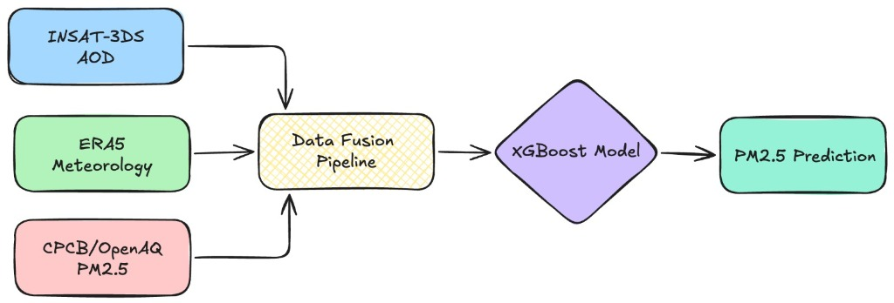
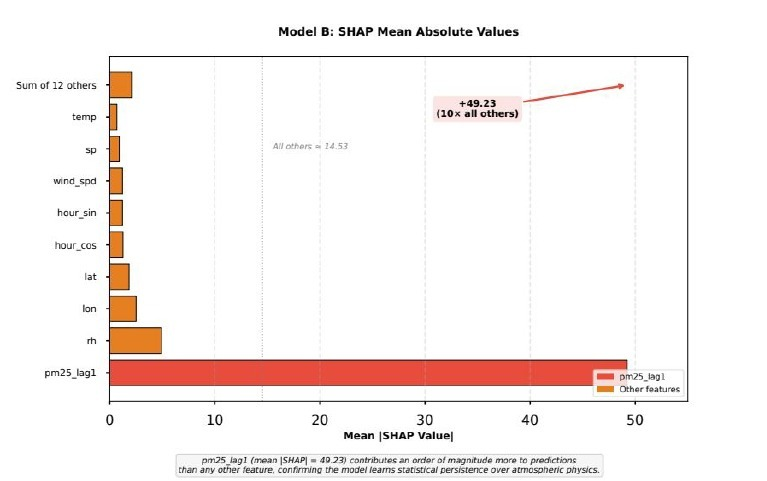

The Study
India's air quality crisis is responsible for over 1.67 million premature deaths annually — yet monitoring infrastructure is concentrated in Tier-1 cities, leaving 70–90% data gaps in smaller urban centers.
This study presents a dual-regime machine learning framework that fuses INSAT-3DS geostationary satellite AOD with ERA5 meteorological reanalysis and CPCB ground observations to estimate hourly PM2.5 concentrations across nine Indian cities.
By honestly distinguishing between mechanistic modelling (physical drivers only, R² = 0.61) and operational forecasting (including temporal inertia, R² = 0.92), the framework enables appropriate model selection for distinct policy contexts — while reducing monitoring costs by 85–90% vs. ground networks.
A Broken
Monitoring System
Ground stations provide only point-source measurements and exhibit 60–75% uptime — creating dangerous blind spots during critical pollution episodes. There is a critical need for a low-cost, continuous monitoring framework deployable in resource-constrained environments.
Dual-Regime
Framework

INSAT-3DS Satellite AOD
Level-2 Gridded AOD (V02R00) in HDF5 format from MOSDAC ↗. 1,505 granules retrieved via Selenium automation. Clear-sky only: 11:15–14:15 IST → 93% temporal sparsity.
ERA5 Meteorological Reanalysis
0.25°×0.25° fields from ECMWF ↗: Boundary Layer Height, temperature, dewpoint, surface pressure, wind speed. Provides all-weather continuous coverage.
CPCB Ground Truth
Hourly PM2.5 from CAAQMS stations, quality-controlled (0–1,000 µg/m³), city-balanced at 42,426 records/city to prevent model bias toward data-rich Delhi (which had 28× more records than Thiruvananthapuram).
XGBoost + Optuna
GPU-accelerated gradient boosting (CUDA). Hyperparameters tuned by Optuna to minimize RMSE. Handles missing AOD natively via default split learning — no imputation required.
Engineered Features
Two Models,
Two Purposes
Incorporates pm25_lag1 (previous hour) to capture temporal inertia — the dominant signal in pollution time series. Ideal for hourly forecasting and public health alert systems.
Relies solely on satellite AOD and ERA5 meteorology. Deployable in cities with zero ground infrastructure. Interpretable for policy analysis and mechanistic understanding.

Model B SHAP: pm25_lag1 (mean |SHAP| = 49.23) contributes ~10× all other features combined — the model learns temporal persistence, not atmospheric physics.
Key Findings
A Tiered Strategy
for 4,000+ Cities
All-Weather AOD
Integrate microwave sensors or ML-based cloud correction to reduce 93% temporal sparsity of optical AOD.
City-Specific Adaptation
Hierarchical or meta-learning frameworks enabling rapid deployment to new cities with minimal ground calibration.
Real-Time Pipeline
Automated ingestion → prediction → alert systems integrated with emission inventories for GRAP interventions.
Data Sources &
External Links
All code and compiled datasets are publicly available to ensure reproducibility.
Complete source code, notebooks, preprocessing pipeline, model training scripts and compiled datasets. Reproducible end-to-end.
ISRO's data archival centre. Source of Level-2 Gridded AOD (V02R00). 1,505 HDF5 granules retrieved via Selenium automation pipeline.
0.25°×0.25° reanalysis: Boundary Layer Height, temperature, humidity, wind, surface pressure — all-weather continuous coverage.
Hourly PM2.5 from CAAQMS stations across 9 study cities. Ground truth for model training and validation.
Open-source platform aggregating real-time and historical air quality data from governments and research institutions worldwide.
Bayesian hyperparameter optimization tuning max_depth, learning_rate, subsample, colsample, gamma, reg_lambda, reg_alpha.
SHapley Additive exPlanations: pm25_lag1 (mean |SHAP| = 49.23) contributes ~10× all other features combined.
Literature
- A. Pandey et al., "Health and economic impact of air pollution in the states of India: The global burden of disease study 2019," The Lancet Planetary Health, vol. 5, no. 1, pp. e25–e38, 2020.
- Central Pollution Control Board, "National air quality monitoring programme: Operational guidelines," tech. rep., Ministry of Environment, Government of India, 2026.
- OpenAQ, "OpenAQ Platform." openaq.org, 2026.
- ISRO, "INSAT-3DS Level-2 Gridded Aerosol Optical Depth." mosdac.gov.in, 2025.
- Y. Liu, Z. Wang, and A. van Donkelaar, "Satellite-based estimation of surface PM2.5 concentrations: A review," Remote Sensing of Environment, vol. 231, p. 111245, 2019.
- M. S. Hammer et al., "Global estimates and long-term trends of fine particulate matter concentrations (1998–2018)," Environmental Science & Technology, vol. 54, no. 13, pp. 7879–7890, 2020.
- A. C. Just et al., "Geographically weighted regression for satellite-based PM2.5 estimation," Atmospheric Environment, vol. 191, pp. 591–600, 2018.